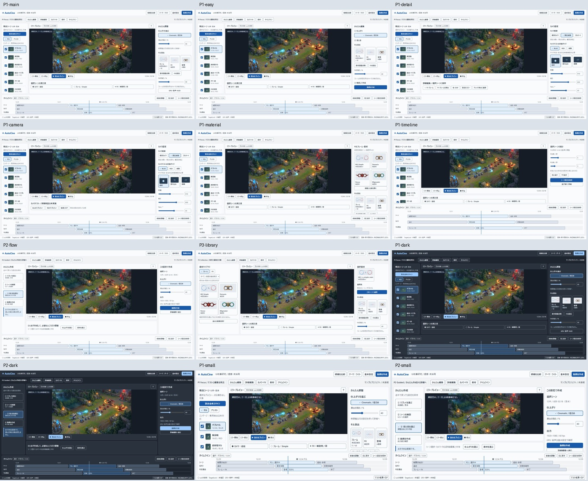
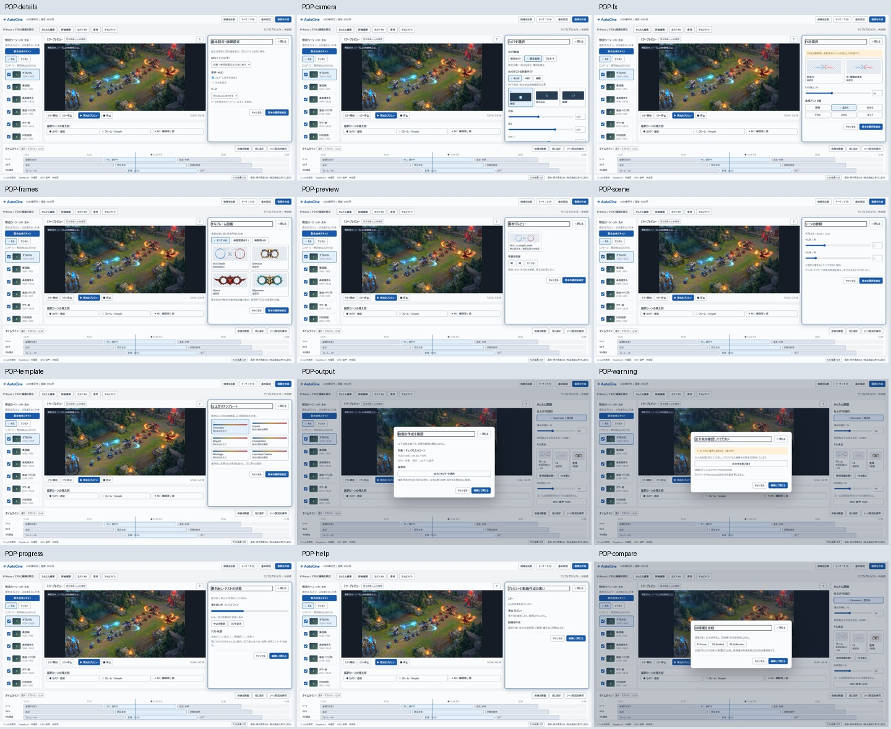

全体構成観測20/20・音声0/20・製品全体合格0/14・正式UI未選定
24画像を比較 / 操作見本 / ChatGPT用コピペ報告


# AutoCine V4 継続研究＋UI改善提案 2026-10-26 / 研究・設計資料のみ / 正式採用なし 今回、前回11本に残り9本を加え、20作品の近全編・全体構成観測をそろえた。断続画像による粗い観測であり、全フレーム検査や音声分析の完了ではない。明示kill通知2件以上を伴う区間根拠は14/20。音声0/20、製品T01–T14の全体合格0/14。残件を外部条件付きで明記し、指示された順序でUI研究に移った。 UIはユーザーが残した7系統の原画像と、最新比較ブランチee700835efe25c1aa65670d73e57f1fd9373bac2の7画像・結果報告・関連コードを読んだ。今回は比較EXEを起動せず、公開されたオフライン実機撮影結果を確認した。研究用の3改善案と24画像、HTML/CSS/JS、実測寸法、機能対応、審査基準を制作した。製品UI・既存候補は置換しない。 入口はindex.html。ui/gallery.htmlで24枚を比較、ui/index.htmlで操作見本を開ける。HTMLはダブルクリックでも開ける。値は見本でありLoL接続・スキャン・録画・書き出しを実行しない。画面内の接続表示は未接続、プレビューは構図見本イラスト。 元のV4/追補/quiet ZIPは封印のまま。Windows・ネットワーク・全体音量・ブラウザーのセキュリティ設定を変更していない。本体コード、UI29、素材承認、mainへの変更なし。保存するファイルはこの研究フォルダーとその配布ZIPのみ。
# 6レシピの改訂提案と比較試験 正式採用・製品実装・原動画との数値一致は未成立。観測と提案を区別する。 |レシピ|今回実際に観測した根拠|既存の接続候補|新規仕様・未検証| |---|---|---|---| |Cinematic|V03/V16の人物・武器寄りと広い戦闘の交替、V25 75–89/136–147人物挿入|旧カメラ10種、HUD、clip、カラーで部分近似|外部CGや人物ポーズをリプレイカメラで再現できるとはしない。戦闘の合間だけ人物寄りへ遷移するルール| |Impact|V20 202/245/269/419/859/934/1047付近のぼけ転換、V01 497Penta|既存FX、キルフレーム、6登場、cut|Flash/Zoom Blurが参照と同じ処理とは未確認。CPU causal v4と正規化blurは研究候補のまま| |Elegant|V25赤い導入→通常色の戦闘、V03暖色/ピンク/人物挿入|カラー、控えめなFX、低頻度挿入|人物別マスク・外部アート・深度処理は別実装。ゲーム版の色差をグレードと断定しない| |Competitive|V07/V11/V12のHUD付き長い攻防、V20 541–608/1119–1154|広い旧カメラ、前後トリム、HUD保持|残敵・退路・射程円を含めた複数対象包含、engage開始終了の確定ルール。ゲーム移動を編集移動と混同しない| |Montage|V01人物/ランキングと戦闘、V13 521付近巻戻し表示、V25章ごとの紹介|clip順序、cut、フレーム/FX、テンプレート|章分け/導入素材トラック/安全な再提示は提案。音楽beat同期・逆再生処理は未検証| |Low-load Cinema|V12長い通常俯瞰、V25 104–118/310–350の射線を含める構図|旧カメラ、少ないFX、長めclip|負荷の実機測定ではない。FX予算・性能による自動削減は新規| ## 優先改善案 1. **構図を戦闘の種類で分ける**：近接・長射程・複数人戦闘。特にV25の発射者/弾道/着弾対象は、単一TargetLockへ寄るだけでは欠ける。発射と命中の時刻・IDを結ぶデータが必要。 2. **最後のkill後の追走と生存を保持**：V01 584–604、V11 732–763、V20 112–166。kill直後の一律cutを避ける候補。確実なイベントがない場合はユーザーの前後秒数を優先。 3. **FX安全性を先に検証**：CPU Flash連続killの因果性、Zoom Blurの飽和、preview/export座標契約。美術評価と数式/実機評価を別記録。 4. **人物寄りを挿入扱いに**：戦闘中の自動急接近を既定にしない。手動、既存カメラ、BLUE/RED不明時の安全な固定へ戻す経路を残す。 ## 将来の比較試験（未実行） 共通：同一ROFL/パッチ/プレイヤーID/イベント時刻/seed、1920×1080・1366×768、30/60fps、BLUE/RED両方、手動・固定自動・フルオートを保存。入力不足時はNOT_RUN。ReferenceとAutoCineは別由来映像なので画素一致ではなく構図・可読性・品質で比較する。 |ID|参照区間|AutoCineで用意する入力|測定・合格条件| |---|---|---|---| |CT01|V01 485–508、584–604|単発→Double→Triple/Pentaの確定イベント列|kill直前/瞬間/1秒後の対象可視率、残敵・退路、clip終端。通知IDとイベントを一致、目視対象逸脱0。自動cutは手動基準より重要情報を欠かさない| |CT02|V20 541–608、1119–1154|5人以上の同一fight・BLUE/RED|選択対象と戦闘対象群のbbox包含率、画面端/地形遮蔽/カメラ飛びを毎フレーム記録。暫定目標95%以上、閾値はユーザーと確定| |CT03|V25 104–118、310–350、509–529|長射程の発射/着弾と時刻が既知|射線の読みやすさ、発射/着弾双方の取りこぼし0、時刻ずれをフレームで測定。新規イベント契約なしならNOT_RUN| |CT04|V12 443–458/696付近、V13 521|死亡/リプレイ再提示/通常色の対照|死亡グレー・低HP縁・ゲーム発光を編集FXと誤判定しない。分類は人手ラベル、認識精度合格とはしない| |CT05|V20の短いぼけ転換|同一入力のlegacy/正規化blur/causalFlash|白飛び率、平坦背景の平均輝度、kill2開始前差分、single kill互換、全デコード。legacyと候補を別revision保存| |CT06|人物挿入を含むV25各章|HUDあり戦闘とHUDなし人物の独立shot|キル中の遮蔽なし、挿入の意図/時刻、戻り先の構図。外部CGの再現合格にしない| |CT07|参考音声未分析|LoLゲーム音声＋既知クリック/波形＋録画出力|通常速度でAVオフセット、ドリフト、AAC/fps丸めを計測。暫定±50msと長時間driftを別判定。無音画像から合格不可| 参考URL・秒数と観測状態はVIDEO_CONTINUATION.json/01_VIDEO_NOTES_JA.md。1x/2xの観測速度から原動画の速度倍率を推定しない。実3Dカメラ値は映像から取得していない。
# 現研究の区切りと未解決事項 現環境で進められる機械検査と粗い映像構成観測を整理した段階。製品完成や素材全合格ではない。前版の検査は再実行したものと区別し、以下はV4/追補からの引継ぎ。保護ハッシュのみ今回再検査。 |対象|得られている根拠|残件・次に必要なもの| |---|---|---| |20参考動画|前版11＋今回9、近全編構成20。今回ログ全て5秒超の画像間隔を補完|全フレーム精査、元速度/FOV、assistの確定根拠。明示kill2件以上14/20、未確定V02/03/08/15/16/24| |音声20|対応する取得・聴取ツールなし、0/20|音声入力・聴取/解析手段。勝手なダウンロード、音を出すだけの完了扱いをしない| |652フレーム|ハッシュ・寸法・透過等の全件自動検査、原寸目視/背景比較は前版に記録|12条件の全合格0。正式承認1点と確認用651の区別を維持。動く実LoL/HUDでの判定は別| |651暫定肖像枠|幾何候補として記録|原作者の完全原本/境界・穴形状の確定、実装での反映審査。推定値を正式確定しない| |原本制約19|55検索/578パス、完全原本の追加発見なし（前版）|No004見切れ8、パレット制約11。完全版がない限り保留。画像を補作して原本扱いしない| |35FX|全件ハッシュ・互換/複数強度/人工背景・限定LoL参照の合成検査|正式承認0。時間全体・現行LoL実写・GPU経路の合格は別。同名フレーム承認を継承しない| |登場6種|23472幾何条件、144CPUクリップのデコード（前版）|実LoL/製品renderer・全フレームの見た目、6種類のID/既存pop意味を保持| |CPU Flash|legacy共有ゲート問題を人工入力で再現。v2不互換、v3未来pulse漏れ、v4causal24ケース候補|製品へ未採用。全kill列・FPS/境界・実LoL比較。研究revisionを勝手に置換しない| |Zoom Blur|重み合計/scaleによる飽和を人工入力で確認、正規化候補9出力|正式アルゴリズム採用なし。動的実LoL/GPU/色保持の比較| |preview/export位置|1920一致、1366/1280不一致のCPU実出力とbbox記録|共通座標契約候補を製品の両経路へ適用して再試験。画像の似せ込みだけで修正済みにしない| |GPU/NVENC|NVENC短尺4成功、OpenCL FXはdevice−12失敗（前版）|成功経路は別。LoL負荷下・GPU FX・長時間・失敗時fallback確認| |AV同期|人工入力の12/32系統と128測定、fps/AAC量子化影響記録|LoL実音/長時間drift/ハードウェア経路。固定オフセットを採用しない| |自動カメラ|48数理＋133提案ルール、手動/未知サイド保護（前版）|実Replay/BLUE/RED/TargetLock、多人数と長射程の実機。T01–T14の製品全体PASSは0/14| これらの不足を明示した上でUI研究へ移行。ユーザー/Codexが実機・追加原本を用意した後の審査を妨げない。今回、LoL・製品EXEは起動せず、設定・承認状態を変更しない。
# ユーザーが残した7系統の傾向と改善案 正式UIは未選定。好みの理由は本人への確認結果ではなく、選択された画面に基づく設計側の仮説。 ## 読み取り確認した資料 旧原画像はui_implementation_audit_29_20261021/SCREENS_29.jsonの29枚を保持し、その中の7系統を比較。最新比較版はcodex/ui-29-implementation-20261021のee700835efe25c1aa65670d73e57f1fd9373bac2。numbered_frozen_all_finalからT-B-C/L03-N/T-A-M/L06-L/R-E-main/L02-M/L05-Mの7枚を取得して原画像と目視比較。最新RESULT_FINAL_JA.md、comparison_detail.py、reference_studio.pyも読み取り。 最新比較版はオフライン未接続表示であり、中央の暗い領域を不具合と断定しない。原画像との余白・文字・素材表示の差は残る。報告には旧案の外観差、新Eの小さい画素差、LoL実利用・1920/125%DPI未検証が区別されている。本研究ではEXEを再実行せず、これを製品合格として追認しない。 ## 共通点と、好まれる理由の仮説 |7系統|残すべき独自性|改善する点| |---|---|---| |旧テストB カメラ・FX|サイド別テスト、中央ミラー、下部ログ、右の視覚的カメラ選択|BLUE/REDとテーマ色の混同を防ぐ。テスト対象・現在値・結果を同一文脈に。録画開始と演出確認を分離| |旧案3 ハイブリッド|通常/詳細を同じ文脈で切替、中央preview固定、横長timeline|切替で状態を失わない。小さい多数カードを図鑑へ広げ、主操作は一列に| |旧テストA 現行整理|既存機能の所在を見失わない、現行からの移行負担が少ない|常時細かい説明や全設定を並べず、状況に応じて展開。未接続・未スキャンを正しく表示| |旧案6 ライブラリ・編集|素材を探す行為と編集する行為の分離、サムネイル比較|素材状態/適用先を明示。行選択・試し当て・確定を区別、検索と絞り込みを固定| |新E Flow|手順が見える、推奨値で最短作成、詳細への逃げ道|ステップ戻りの値保持、スキャン失敗復旧、作成対象/保存先を明示。おすすめが上書きしない| |旧案2 標準編集|左素材・中央映像・右プロパティ・下timelineという予測しやすさ|複雑な多トラック編集を暗示しすぎない。現在のclip/trim/shotとの対応を表示| |旧案5 ウィザード|次に押す場所が明確、初心者に段階が見える|完了前の各段階でもプレビューを保持。詳細へ進んでもやり直しを要求しない| 7系統は大きな映像と機能の整理を共通して持つが、素材を探す/素早く作る/実機テストする優先順位は異なる。1案に統合して選択済みとは扱わない。 ## 提案3案 |案|操作順|長所|短所/注意| |---|---|---|---| |P1 Focus|左scene→中央確認→右調整→下trim→動画作成|B/3/A/2の強み。テストと編集を往復しやすい|設定に慣れない人には項目が多い。簡単編集を既定候補とするが採用は未定| |P2 Guided|Replay→scene確認→仕上がり→作成、必要時詳細|E/5/3の強み。ワンクリックへの道筋を維持|大量素材比較や反復テストには深い導線。P1への切替は共有状態を保つ| |P3 Collection|素材絞り込み→見本→シーンへ適用→編集|6/2/Bの強み。フレーム/FXを視覚比較|最初の動画制作の説明はP2より弱い。ライブラリに埋没しない作成導線が必要| 設計側のテスト優先推薦はP1、初心者導入優先はP2、素材審査優先はP3。ユーザーの採用決定ではない。旧7系統/旧29画像を削除・統合しない。 ## 足す・減らす・維持する 足す：接続/スキャン/プレビュー/録画/出力の状態区別、行選択と出力チェックの説明、サムネイルの承認ラベル、変更範囲のプレビューとUndo、結果とログへの入口、数値とsliderの連動。 減らす：同じ設定の常設重複、説明長文の常時展開、意味のない装飾、毎回の確認ダイアログ。機能自体は削除せず詳細/図鑑へ移す。 維持：10カメラ・3制御方式・BLUE/RED・TargetLock、37/89/652別カタログ、35FX/6motion、GPU/NVENC・LoL音・BGM・HUD、scene/trim/keyframe/色/DOF、実録画/出力、簡単/詳細、全旧案の比較権。 目に優しい配色は純白/純黒を避けた提案。疲労低減の医学的実証はしていない。明暗を選べる、十分な文字/余白/コントラスト、映像色をUIテーマから独立させる。アクセントは主操作に限定し、選択は✓と太枠、警告は⚠と文言を併用する。
# ポップアップ・ダイアログ提案 Microsoftはモーダルを必要な中断に限定し、補助的情報は軽い表示にする設計を示す。本案では反復選択を右側ドロワー（レイアウトを再配置しpreviewに重ねない）とし、出力確認などにモーダルを使う。ドロワーはAutoCine向け独自案であり、MicrosoftのFlyoutそのものの実装ではない。 参考：[Dialogs and flyouts](https://learn.microsoft.com/en-us/windows/apps/develop/ui/controls/dialogs-and-flyouts/)。 |画像ID|種類|内容と確定範囲| |---|---|---| |POP-details|右ドロワー|GPU・音声・HUD・テーマ。基本設定をプロジェクト値と分離| |POP-camera|右ドロワー|制御方式、BLUE/RED、全10スタイルへの入口、slider/数値、TargetLock| |POP-fx|右ドロワー|35FXの確認用状態、弱強/数値、6登場。使用選択は正式承認ではない| |POP-frames|右ドロワー|652を承認状態・テーマで絞る図鑑。原本89/37バッジと混ぜない| |POP-preview|右ドロワー|素材の拡大・明暗/チェッカー比較。元素材は不変| |POP-scene|右ドロワー|選択sceneの時刻と前後秒、出力チェックと独立| |POP-template|右ドロワー|6レシピを比較、変更項目表示、適用前はdraft| |POP-output|確認モーダル|出力対象/本数/解像度/fps/音声/保存先。録画開始と明確に分離| |POP-warning|警告モーダル|処理不能の原因と選び直す操作、設定保持、詳細ログID| |POP-progress|非モーダル|進捗、計測済みETA、完了/警告/失敗、保存先。閉じると中止を分離| |POP-help|右ドロワー|ミラー/演出確認/動画作成の意味と次の操作| |POP-compare|比較モーダル|P1/P2/P3、元案7系統と正式選定の区別| ## 実装契約 - ×閉じる、Esc、キャンセルを明示。右側選択はdraftを編集し「適用」でcommit、閉じるで未確定だけ破棄。外側clickだけで変更確定しない。元の選択は保持。 - ドロワーは非モーダル：背景操作を禁止せず、フォーカスを閉じ込めない。ヘッダーとfooterを固定し中身のみscrollする製品実装を推奨。現在の試作ではドロワー全体scrollで、固定footerは未実装。 - モーダルは背景操作/scrollを抑止、初期focusを見出し/安全な選択へ。Tab/Shift+Tabを内部で循環し、Esc/閉じる後は起点へ戻す。危険操作にEnterが即時発火しない。 - 中止は確認後にjobへ送る。進捗窓を閉じる/テーマ変更/UI切替でjobやpreviewを停止しない。完了通知は非モーダルで再表示できる履歴を残す（履歴は新規提案）。 - 通知だけならトースト/InfoBar候補。長文エラーを自動消去しない。色に加えて成功✓/注意△/失敗×と文言、live regionを適切に使う。 - キーボード・フォーカスは[W3C Modal Dialog Pattern](https://www.w3.org/WAI/ARIA/apg/patterns/dialog-modal/)を参考。HTML dialogの動作をWinUI/Tk/WebView製品で再検証する。 モック中のボタン/背景切替/保存先/適用は配置例が中心。全て動作する製品ではない。HTMLで確認したのは画面遷移、表示、slider/数値連動、theme値保持、fresh-openモーダルのEscとfocus復帰。ファイルpicker、素材全件検索、実ジョブ、正式承認操作は実装していない。
# Codex実装引継ぎ（採用前の研究提案） 本体コードを本研究で変更しない。候補を勝手に正式採用せず、ユーザー/ChatGPTが比較して決定するまで旧案の忠実実装と本提案を別ルートにする。 ## 画像再現の正本 SCREENS.json（24画像ID/params/解像度）、screens/*.png（比較基準）、ui.css/ui.js/index.html（配置・状態見本）、MEASURED_LAYOUT.json（各画面のregionと全button/input/selectの矩形）。寸法はCSS論理px、撮影DPR1。1920×1080を基本、P1/P2は1366×768も固定画像。125/150%DPIは未検証。 通常1920：上部60、nav52、下timeline192、footer38、各行gap10。workspace x16–1904、P1左260/右358/列gap12/中央可変。P2左230/右340。P3左410/右330。panel角丸10、境界1、間隔12、padding16、button40、本文16/副文14/見出し19、checkbox22、数値78×38。詳細数値はMEASURED_LAYOUTを優先。 1366：header52/nav48/timeline154/footer32、gap7、左212/右282、列gap9、文字15、button36、quick64。previewの映像表示最小は480×270（今回通常最小は約508×286）。スクリーン領域とobject-fit:contain後の実映像矩形を別に比較。 1920ドロワー：右16/top132/bottom250/幅550、preview領域を再配置して重なり0。モーダル幅660/maxheight80vh、背景dim。timeline詳細は高さ300。各固定/scrollは実測JSONとCSSのoverflowを参照。 ## 維持する共有状態 App/coreは1インスタンス。projectId/replaySessionId/targetPlayerId/selectedSceneId/checkedSceneIds/playhead/sceneSettings/cameraMode/cameraSide/cameraStyle/cameraValues/TargetLock/frameId/effectId/motionId/outputSettings/mirrorSessionId/activeJobIdをUIの外へ置く。テーマとレイアウト切替はこれらを再初期化せず、job/previewを再生成しない。 appearance.mode=light|dark|systemをユーザー設定へ保存、Windowsテーマ変更はsystem選択時のみ反映。UI色の更新で映像にfilter/LUTをかけない。カメラ/素材/レシピの変更は同じmodelへ明示commit。ウィザード戻りでも保持。 本HTMLは画像制作のための試作で、ページ遷移をまたぐ全編集状態の保存やsystem自動追従は未実装。テーマのライト/ダーク切替はDOM更新のみ、現在の数値を保持することを実操作で確認した。 ## 機能対応 FUNCTION_BINDINGS_REFERENCE.jsonにF01–F25の既存接続を前監査から継承。今回latest reference_studio.pyとcomparison_detail.pyも読み、実App共有・派生画面の明示方針を確認。旧baselineと最新コードは別のcommit。接続名だけで動作合格にしない。 |提案UI|接続候補|実装時の注意| |---|---|---| |リプレイ/Target|on_quick_prepare/on_open_replay/on_play_recent/on_lock|接続済み表示は実測。選択player IDとBLUE/REDを混同しない| |試合全体scan|on_scan/pb_scan/lbl_scan/_match_scan_cache|非同期進捗/失敗/取消、未接続や未実行を空の成功にしない| |scene/チェック|on_scene_selection/on_jump_selected/checked_kills/on_toggle_checked|行選択と出力対象を分離、同一IDで参照| |assist/engage|var_event_mode/var_scene_player_filter|engage専用検出は未対応のまま無効/説明。新規の実イベント契約が必要| |ミラー|on_mirror_start/on_mirror_stop/var_preview_hz|1セッションを固定previewへ、実FPSと目標Hzを区別| |演出プレビュー|on_preview_play/on_preview_stop|録画なし確認。stop_ev共有によるrecordへの影響は製品試験| |カメラ|var_camera_control_mode/var_camera_side/var_style/sl/director_work_controls|manual/fixed_auto/full_autoと旧10IDを維持、未知side時安全側。BLUE/RED試験を分離| |フレーム|kill_frame_gallery/var_kill_icon_style/var_work_frame/work_gallery|37バッジ、89原本、Work652の別カタログ。1承認記録と651確認用を明示| |FX/登場|var_work_effect/select_frame_with_effect/var_work_strength/var_work_review/var_kill_icon_motion|35FXの確認用を表示、6motion IDを維持。同名承認を伝播しない| |timeline/trim|SceneTimeline/var_pre/var_post|1–15s/0.5sの既存契約。図の多段帯は自由な多重動画合成engineの追加ではない| |詳細編集|on_save_scene/on_scene_undo/redo/on_copy_scene_settings/on_paste_scene_settings/on_keyframe_* /scene_fx_vars|シーンdraftと確定値を分離、Undoの範囲を説明| |GPU/音声/HUD|var_encoder_policy/var_gaudio/var_hud_mode/_show_legacy_settings|方針と実使用encoderを区別。OS音量・ネットワーク設定は変更しない| |実録画/出力|on_make_selected/on_make_checked/on_make_clips/on_one_click/on_smart_one_click/on_stop/on_pick_out|選択対象と保存先を明示、通常/スマートの既存差を維持| |診断/結果|on_automatic_qa/on_dev_camera_qa/on_show_diagnostics|未実施/成功/要確認/失敗の実状態。ログZIPの内容確認、誤って成功表示しない| ## 新規提案として扱うもの P1/P2/P3レイアウト、右ドロワー、状態をまたぐ比較器、通知履歴、draft/commit統一、theme/system保存の統一adapter、構図種類別の自動条件、発射/着弾イベント契約。現機能の呼出しだけで新規提案の全てが存在するとはしない。 ## 画像・操作審査 1. SCREENSのID/解像度を固定し同じsample state/DPR/フォントで撮影。previewを実映像からmaskしてUI差分を別測定。旧原画像との一致審査と本提案の審査を混ぜない。 2. panel境界±2論理px、control位置/大きさ±2、fontsize±1、gap±2、色は指定token。閾値は提案。差分の大きい場所をoverlay/heatmapで人が確認し「寸法一致だけで外観合格」にしない。 3. 1920/1366、light/dark/system、100/125/150%DPI。preview最小480×270、全体水平scroll0、panel内scrollのみ。大きな文字/Windows高コントラストも別検証。 4. 10カメラ/BLUE/RED/数値、素材1/651/35、6登場、各設定への到達、scene選択・出力チェック・Undo/redo・保存を各案から確認。 5. UI/theme/簡単詳細切替の前後で共有状態digest一致、mirrorSession/job ID一致。外観だけでなくPlay/Stopが録画を意図せず止めないか確認。 6. キーボードのみで開く→選ぶ→適用/取消→閉じる、Esc、focus復帰、modal背景無効、drawer非trap。ネストdialogは原則避ける。 7. 実Replay、BLUE/RED、TargetLock、GPU、LoL音、AV同期、実MP4は別の実機合否表。オフラインmock/画像一致でPASSにしない。
# テーマ・検査記録 ライト/ダークでP1/P2の配置は共通。配色はCOLOR_TOKENS_AND_CONTRAST.json、実寸はMEASURED_LAYOUT.json。純白/純黒を広い背景に使わず、オフホワイト/ブルーグレーを採用。映像imgはobject-fit:contain、filterなし。 通常文字4.5:1、操作識別に必要な境界/選択は3:1を目安に計算。検査14組の全てが閾値以上。装飾panel境界は対象外で、全画素のWCAG認証ではない。[W3C文字コントラスト](https://www.w3.org/WAI/WCAG22/Understanding/contrast-minimum.html)、[非文字コントラスト](https://www.w3.org/WAI/WCAG22/Understanding/non-text-contrast.html)を参照。 実施：24画像の解像度一致、全assetロード、全体水平overflowなし、通常最小preview>=480×270、P1/P2のtheme前後panel寸法一致。全24画像をoverviewで目視し、main/小画面/設定/警告を実寸でも確認。スクロールして初めて見える操作は消失ではなくpanel内の到達として別検証。1366版timeline3行が切れないよう高さを調整。 実操作：fresh-open output dialogの初期focus=見出し、Escで閉じて「動画を作成」へ戻る。camera距離1000入力→dark切替後も1000。slider/numberは相互更新。これらは試作HTMLの限定検証。実App接続・systemテーマ追従・全keyboard/全reader/highcontrast/125%DPI・全機能到達の実機合格ではない。 試作の制約：動作しない配置例のボタンがある。素材全件検索・checker切替・出力picker・処理開始・template適用は見本。ページ遷移をまたぐ全編集状態保持は実装前契約。6登場の視覚的な動きのサムネイルは将来製品で実素材から生成し、文言/矢印とともに表示する。現在は文字ボタンで6種を表示。
# 変更・作業記録 変更したもの：本研究のwork/autocine_continuation_20261026、outputs/autocine_continuation_20261026、その新規配布ZIP。読み取り保護対象1251ファイルは同一ハッシュ、前の3ZIPも同一ハッシュ。 動画は既存IABで1本ずつ、ミュート、非全画面、bulk downloadなし。Braveのユーザーウィンドウに触れていない。音声取得手段なしのため音量を上げていない。動画は各観測後pauseを確認。 狭いプレイヤー操作のため一時viewport1280×900、UI指定画像のため1920×1080/1366×768を使用。これはブラウザー内描画範囲で、Windowsの表示/音量設定変更ではない。終了時reset。 GitHubの最新UI画像7枚を読み取り取得。sandbox内HTTPはソケット権限/名前解決で失敗し、許可されたsandbox外の同じ読み取り取得が成功。Windowsネットワーク異常の根拠にはしない。設定変更やネットワークリセットなし。 ローカル画像化用127.0.0.1限定HTTP helperを1つ起動。sandboxのソケット制約で失敗した自分のhelperは停止し、許可されたhelperで応答200を確認。Windowsサービス/Firewallを変更しない。一時表示であり常駐サービスの導入なし。 通常screenshotが1248幅で切れたため、documentの1920幅をDOM確認し、正式APIのfullPage取得に変更。画像寸法と水平overflowを検証、切れた初期画像は納品対象外。 RTKはこの追補で使用していない。原文ログ/コードを直接確認。クレジット削減量は測定していないし主張しない。